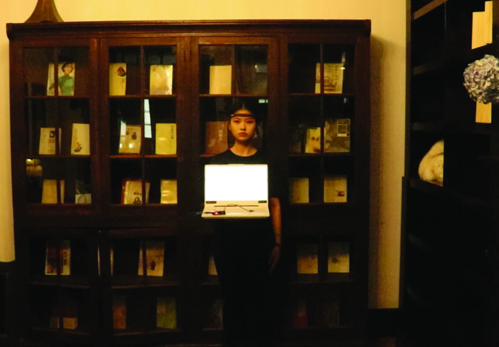
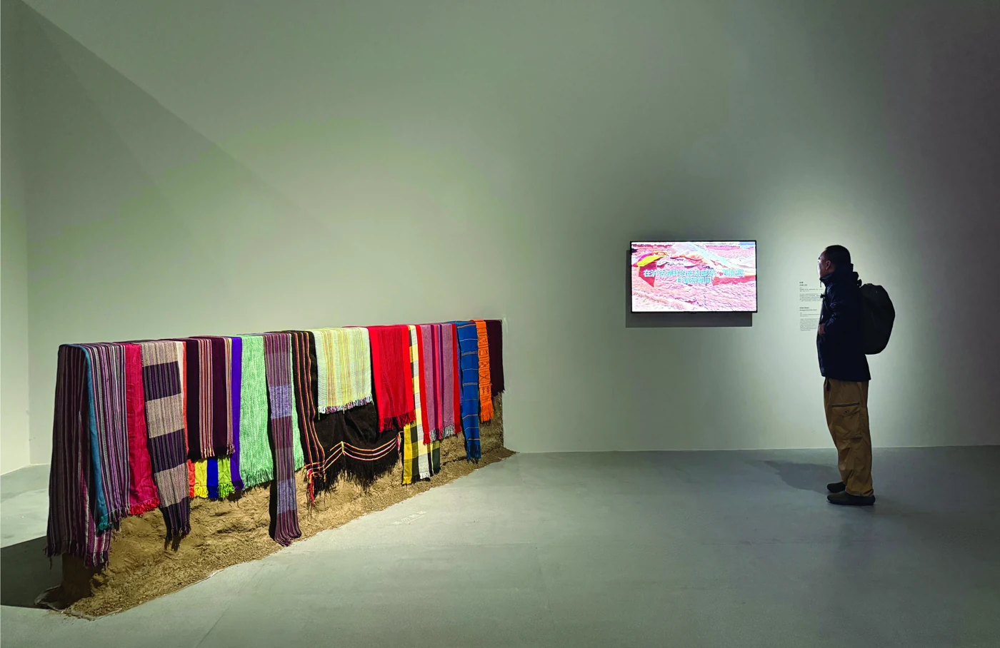
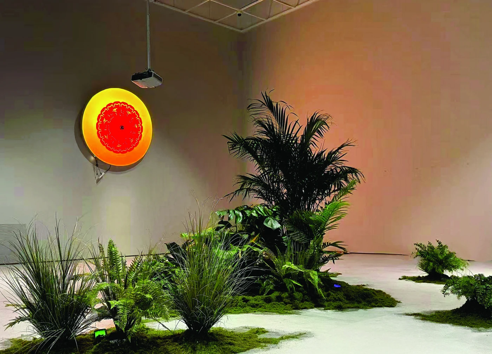
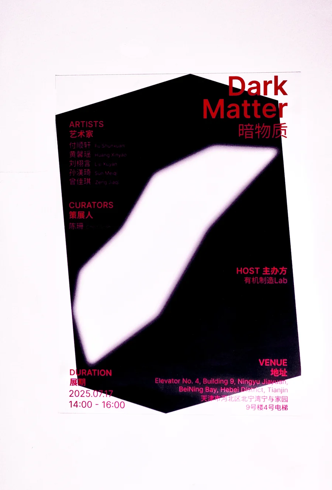
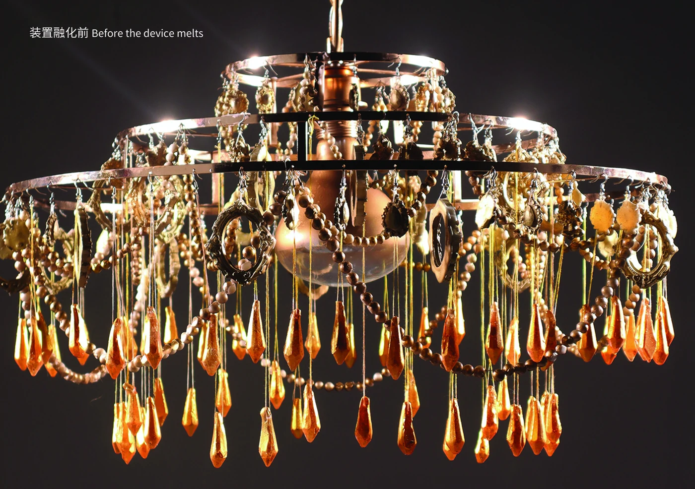
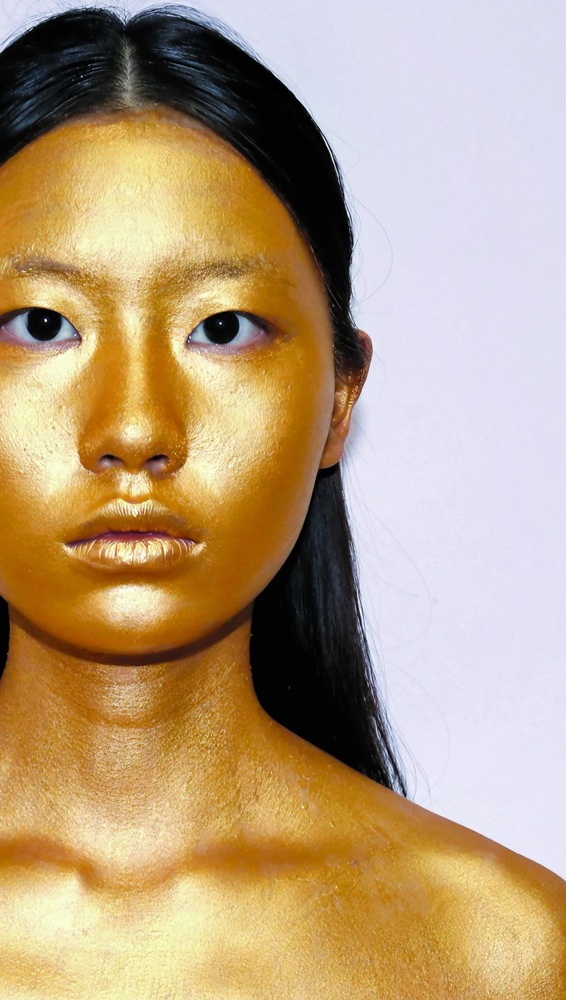
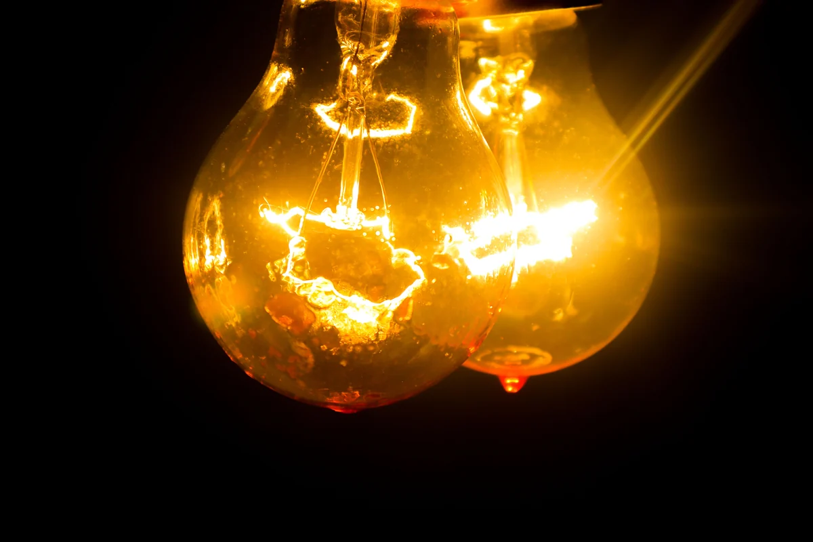
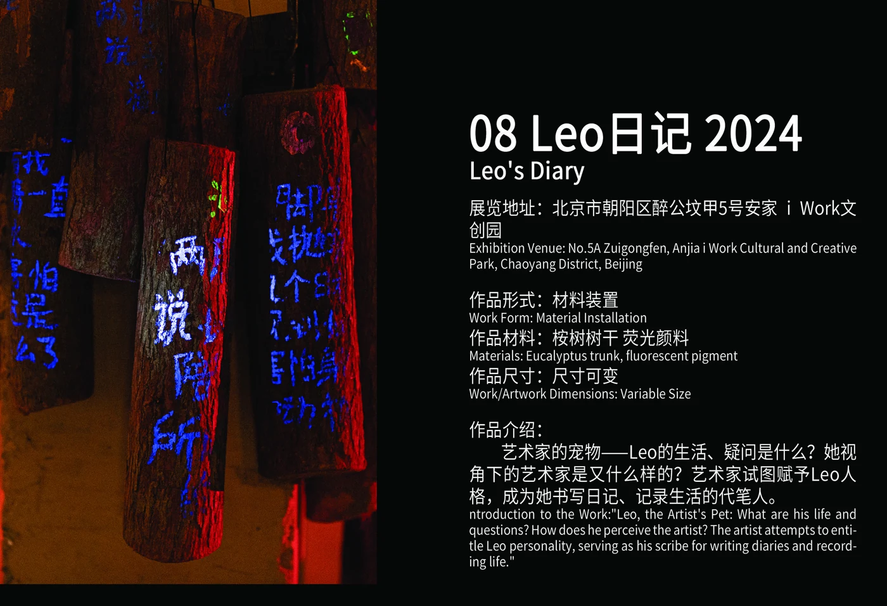
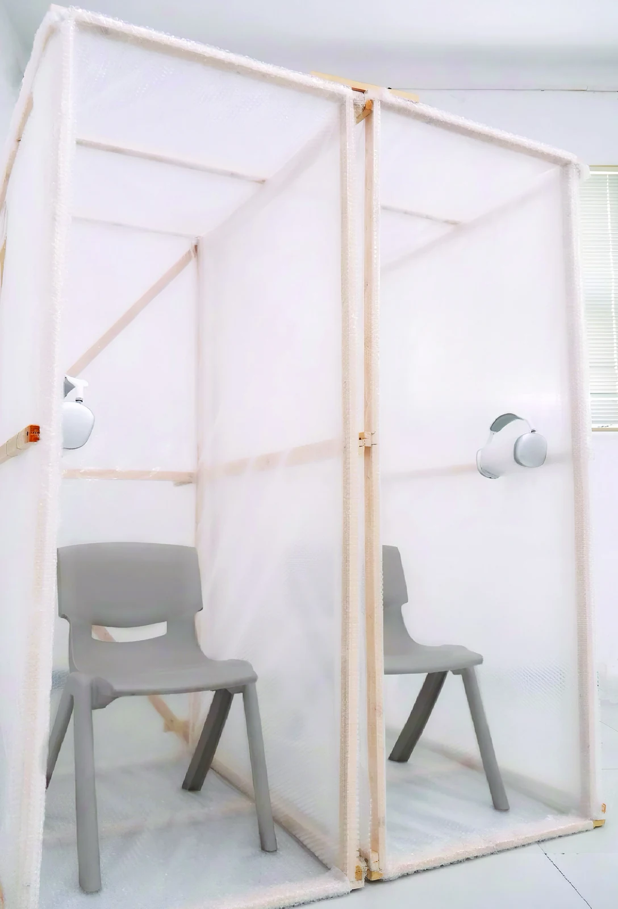
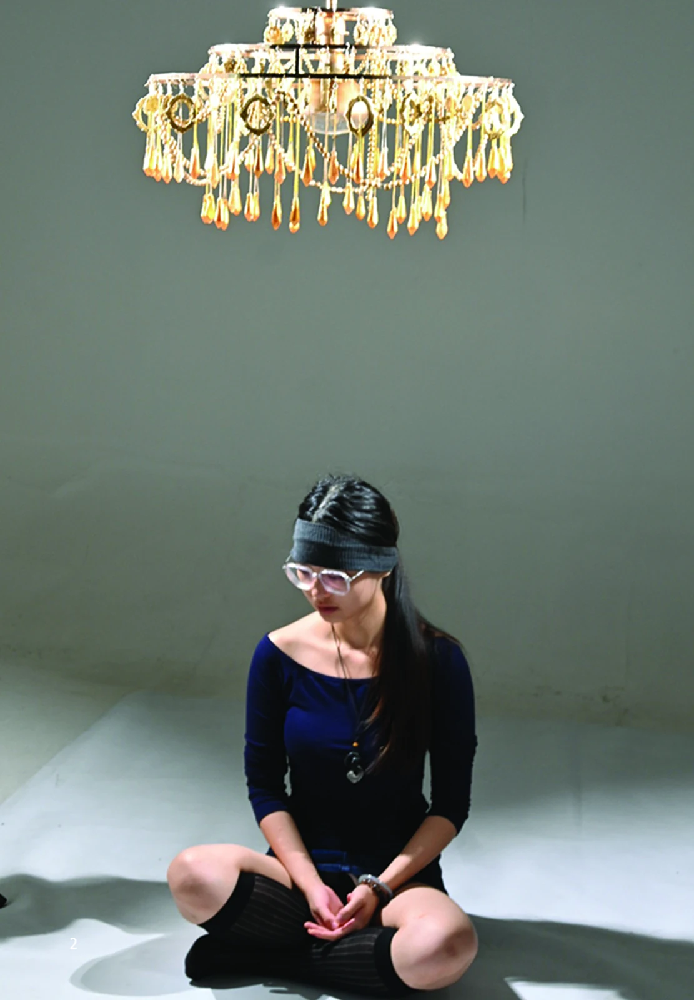

映象诗集系列
本系列包含五件作品，以脑电波交互为主要创作手段，节选冯骥才、曹禺、张爱玲等作家作品中与天津有关的段落，将字词句拆分录入编程，对…
ART / INSTALLATION / CURATION
PORTFOLIO · 2023 — 2025

SELECTED WORKS / 01 — 09
九组创作，沿着材料、身体与感知展开。
显示9组作品

本系列包含五件作品，以脑电波交互为主要创作手段，节选冯骥才、曹禺、张爱玲等作家作品中与天津有关的段落，将字词句拆分录入编程，对…
在云南丽江宁蒗自治县瓦拉壁村驻留一个月期间，我注意到部分以泥土为主要材料的老式建筑逐渐被搁置，脆弱的土墙常被村民用旧衣物覆盖，…

在现代城市中，绿化带植物与“北漂者”都是易被忽视的居民。他们扎根于城市、滋养城市，却鲜少有人关注与倾听。

以“暗物质”这一可能存在于宇宙中的不可见物质为主题，展览将科学想象与艺术表达置于同一场域。

用蜡批量复制金银首饰，将其镀金后悬挂在吊灯架上。蜡的低熔点与柔软特性，让饰品在持续悬吊与取暖灯照射下逐渐融化或自然掉落。

将金色颜料涂满可见的肌肤，尝试用泪水将其冲洗。

作品结合对身体节律的理解与佛教中轮回的时间观，将电风扇改造成类似生物组织的形态，作为生命运作的引擎，引导两个钨丝灯泡转动。

艺术家的宠物Leo如何生活，又会提出怎样的疑问？从她的视角出发，艺术家会是什么样子？

记录在公厕与陌生朋友的对话，并将它们存入蓝牙耳机，放置于两个以气泡膜搭建的空间中。

ABOUT THE ARTIST
我是一名实验艺术创作者，2025年本科毕业于天津美术学院实验艺术系。近年关注赛博格与体感交互艺术，希望持续学习与实践，提升自己的创作能力。
我的创作以材料、身体与日常经验为起点，在装置、影像、声音及跨媒介实践之间展开。《映象诗集系列》将脑电波、文学与在地体验联结；《崩塌的土墙》《植物剧场》关注人与环境的关系；《仅限消耗》《摆脱》《周期》通过材料变化与身体经验呈现时间；《Leo日记》《形而下告解室》尝试从不同视角理解交流与感知。
除个人创作外，我也参与合作项目与展览策划。2025年的《暗物质》是我的策展项目，以科学想象与艺术表达打开对不可见世界的观看。
CONTACT / LET’S CONNECT
欢迎围绕艺术创作、展览与跨媒介实践展开交流。作品集中的电话、微信、出生年月等个人信息未默认公开；如需添加公开联络方式，可在确认后补充。